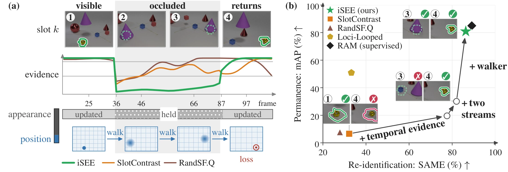
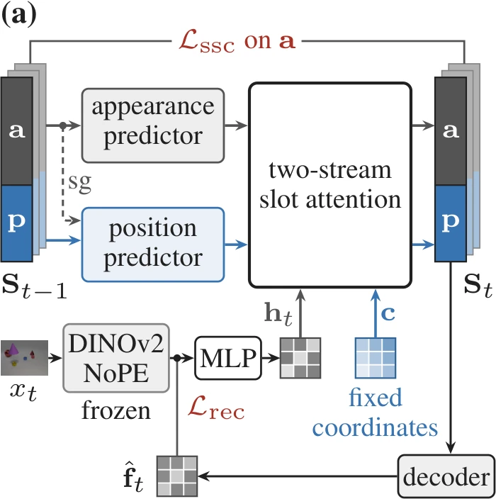
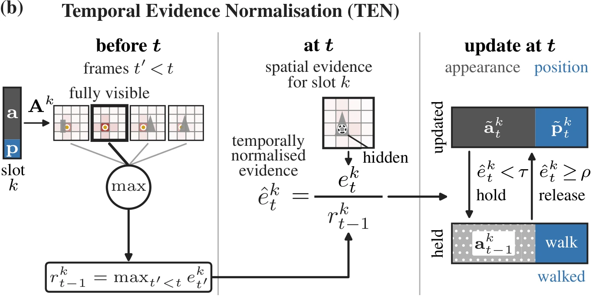
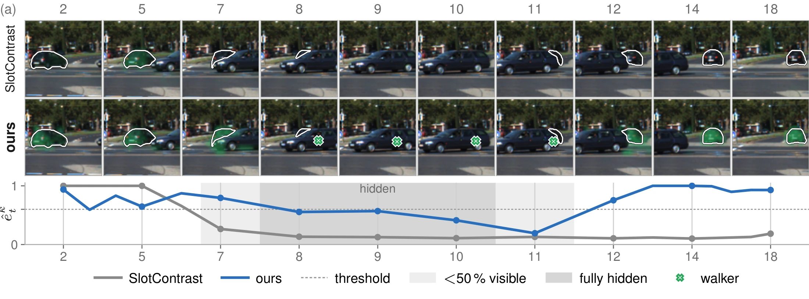

iSEE: Object Permanence through Self-Supervision
INSAIT, Sofia University "Kliment Ohridski"
Object permanence
Hidden is not gone.
A covered object still exists, and it is still somewhere. Infants learn this in their first year, and many animals show it too.


To build world models that represent the world accurately, object permanence is the first thing to get right. An object that leaves view has not left the world: it keeps its identity, and it keeps moving.
In this work, we learn object permanence from video alone, without labels. iSEE notices when an object disappears, remembers what it looked like, follows where it goes while hidden, and recognises it when it returns.
Abstract
Object permanence, keeping track of an object's identity and position while it is occluded, is central to video representations that track, predict and plan. Trackers that achieve it learn from boxes, track identities and visibility labels. On the other hand, self-supervised object-centric methods discover objects without labels: through slot attention, it represents a video as slots that bind to objects and follow them across frames. However, these slots are lost under occlusion, making the desired permanence impossible. Reasoning permanence is a hard problem because it requires to detect when an object becomes occluded, re-identify when object reappears, and keep the object's hidden position continuous, using reapperance as the only learning cue. To address this, we propose iSEE, a novel framework that offers all three aforementioned requirements, without any labels whatsoever. We built iSEE using the following three proposed components: (i) Object evidence modelling: a slot's attention, compared with its own past, reveals when its object is hidden. (ii) Appearance-position separation: two slot streams let the appearance be held for re-identification while the position keeps changing. (iii) Permanence from reappearance: a walker follows the hidden object's position, trained only on where the object reappears. On LA-CATER static, iSEE returns a reappearing object to its own slot after 86 % of occlusions, against 32 % for SlotContrast, and localises it while hidden within 4.1 mAP of the label-trained SoTA RAM. The two streams also allow downstream planning, with the position stream as the action of a world model.
Overview

Method


- Two streams. Each slot is split into an appearance stream a and a position stream p. Slot attention writes a from the frozen DINOv2 features and p from a fixed grid of patch coordinates; the decoder places each object from p alone.
- Temporal evidence normalisation (TEN). A slot's attention on a frame is divided by the most it received earlier in the clip. When the ratio falls below τ the slot is held: its appearance is kept for re-identification. It is released when the ratio rises above ρ. TEN has no parameters.
- The walker. While a slot is held, a random walk over patches on a graph of appearance features moves its position. Its only training target is the position the encoder gives the slot just after the object reappears; no ground-truth position enters the loss.
Examples
LA-CATER clips are selected among occlusions iSEE scores well on; failure cases are at the end.
LA-CATER, moving camera
LA-CATER, static camera
Against the baselines
KITTI, real driving video

Results
| method | static camera | moving camera | ||||
|---|---|---|---|---|---|---|
| occluded ↑ | contained ↑ | carried ↑ | occluded ↑ | contained ↑ | carried ↑ | |
| RAM (vis., bbox, id) | 73.8 | 86.7 | 81.0 | 83.2 | 87.4 | 81.1 |
| Loci-Looped (bg) | 56.6 | 49.9 | 32.9 | 49.5 | 51.8 | 37.9 |
| frozen | 57.8 | 56.8 | 41.9 | 51.4 | 32.2 | 13.6 |
| SlotContrast | 8.6 | 4.3 | 3.5 | 3.1 | 1.3 | 1.2 |
| RandSF.Q | 11.5 | 6.4 | 5.4 | 1.3 | 1.2 | 1.0 |
| iSEE | 80.5 | 84.2 | 78.7 | 54.4 | 51.6 | 46.3 |
Position of the target while it is hidden, LA-CATER (Table 1 of the paper). mAP@[0.1,0.3] ↑ (×100): the share of an occlusion's hidden frames on which the model's box overlaps the target's amodal box above an IoU threshold, averaged over the thresholds 0.10 to 0.30 and over the 195 (static camera) and 388 (moving camera) occlusions; the columns split the hidden frames by their LA-CATER label. A slot model's box keeps the size of its mask before the occlusion and is centred on the predicted position. In parentheses, what a row is given beyond the video: RAM (grey) is trained with visibility labels, boxes and track identities; Loci-Looped reads a per-frame background image (bg). frozen holds iSEE's slot at its last visible position. Bold: the best row that reads the video alone.
Failure cases (8)
One median case per failure mode, and the re-identification failures with the largest displacement.
BibTeX
@article{paudel2026isee,
title = {{iSEE}: Object Permanence through Self-Supervision},
author = {Paudel, Pramish and Chhatkuli, Ajad and Van Gool, Luc and Paudel, Danda Pani},
journal = {arXiv preprint},
year = {2026}
}